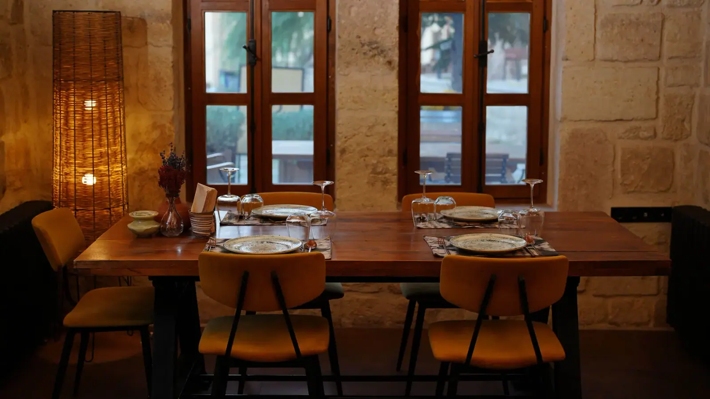
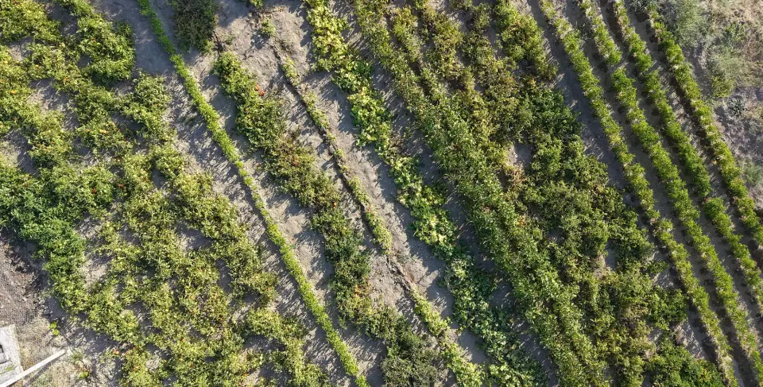

Kapadokya'nın bereketi tabağınızda
Kapadokya'nın bereketli topraklarından özenle seçtiğimiz taze ve yerel ürünleri, yaratıcı tariflerle ustalıkla hazırlanan özgün tabaklara dönüştürüyoruz.
- Şimdi
- SaatlerPzt-Paz 09:00–22:00
- AdresYılmaz Sok. No:10, Mustafapaşa, Ürgüp
- Telefon0 (552) 982 44 75
Her şey tarlada başlar
Ürünlerimizi kendi bahçemizde yetiştiriyor ya da yöredeki çiftçilerden alıyoruz.
Yerel ürünlerimizle ve çiftçilerimizle gurur duyuyoruz. En önemli hedefimiz, Anadolu'nun gıda biyoçeşitliliğini ve gastronomik mirasını yaşatmak.

Mustafapaşa
Yılmaz Sokak'ta, Ürgüp'te
| Pazartesi | 09:00–22:00 |
|---|---|
| Salı | 09:00–22:00 |
| Çarşamba | 09:00–22:00 |
| Perşembe | 09:00–22:00 |
| Cuma | 09:00–22:00 |
| Cumartesi | 09:00–22:00 |
| Pazar | 09:00–22:00 |
- Gorgoli adını Mustafapaşa'nın 5 km güneyindeki Gorgoli Vadisi'nden aldı.